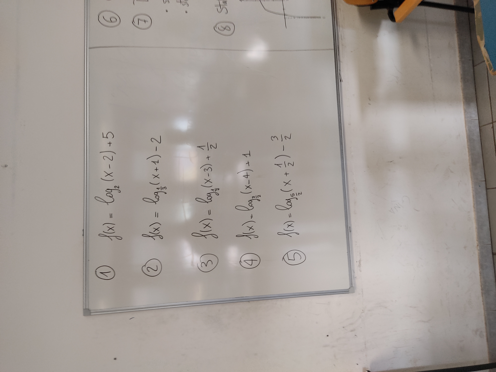
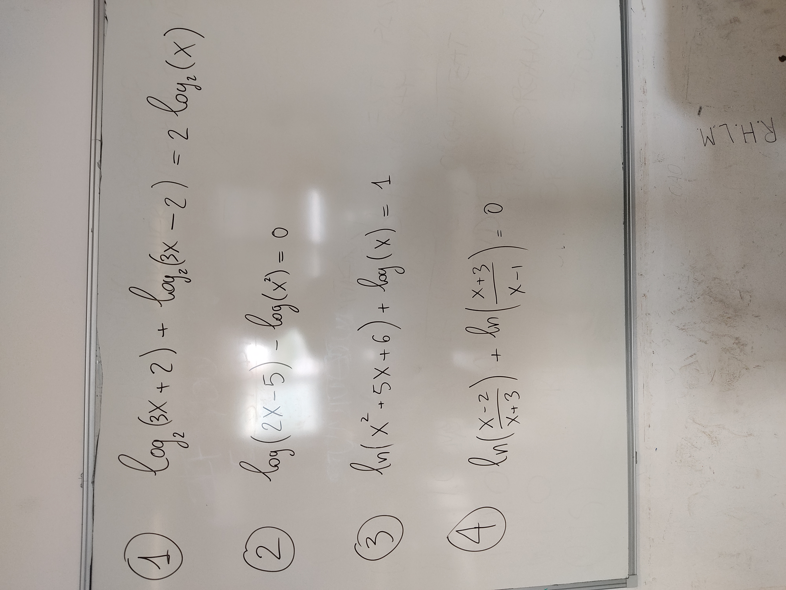
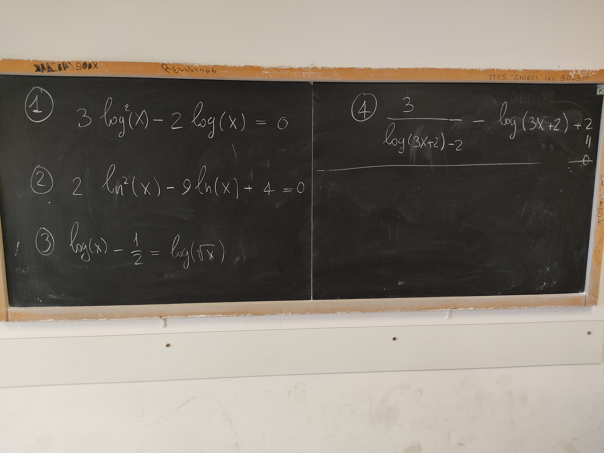

Di seguito trovate tutti i compiti svolti fino a questo momento. Gli argomenti sono quelli illustrati sopra.
Svolgete nuovamente
Gli esercizi della verifica ricalcheranno il lavoro svolto in classe ed a casa.
Esercitazione mercoledì 09/11
Esercitazione mercoledì 10/11
Esercitazione martedì 15/11
Vecchi compiti per casa